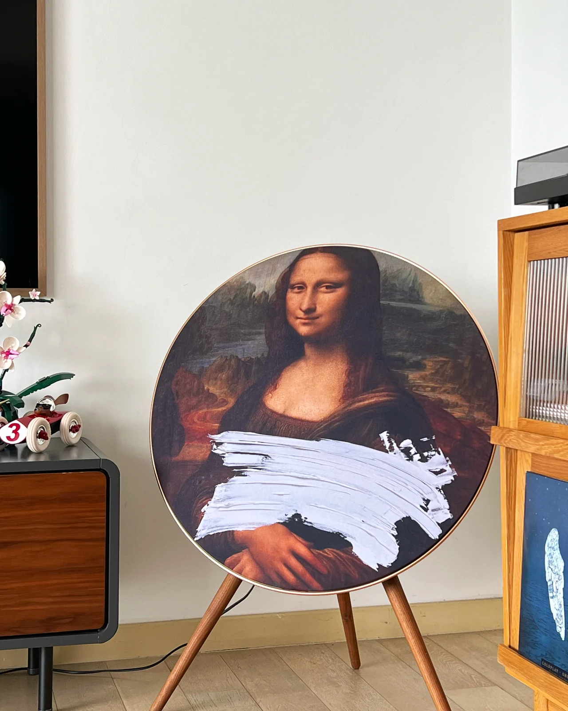

Bang & Olufsen & mona lisa
B&O 与蒙娜丽莎

中文
这台 B&O 的 A9 圆形音响，可能是音响的工业设计中间，我最最喜欢的一台了。
非常巨大的圆形面板，再加上三条木质的支腿，放在家里客厅的角落，毫无疑问是一件非常现代的装饰品。
但因为家里有宝宝，我使用它的时间其实非常少。要把声音开得很大，才听得出感觉。它的发声单元不算特别大，虽然圆盘看着很大，但背面其实有好几个发声单元，都放在里面。
它有一个特色：面板可以换不同的布，不同花纹或者不同印刷的布，让你来搭配家里的装饰。我之前配过月球表面的一块布，还有纯色的布，还有一块波音 787 发动机的布。直到那一年，发生了这么一件大事。
有抗议者在卢浮宫把蛋糕扔到了蒙娜丽莎这幅著名的画作上。其实完全不用担心，因为这幅画我自己亲眼去看过，首先它很小，表面又有一层玻璃，所以奶油蛋糕其实是扔在了玻璃上。
这是其中一件事情。然后旁边的保安慢悠悠地走过去，拿着布或者别的什么东西去把奶油擦掉。擦得不干净，但是擦出了这么一个涂抹的痕迹。然后他放弃了，就让它留在上面。所以，这就是我这台 B&O 音箱外面这块布上那张图的来源。
B&O 官方会自己卖这些布，所以这块布其实很贵，大概差不多 100 欧，加上从欧洲寄过来，差不多 100 欧元拿到手。
我为什么会这么喜欢这幅画？首先，对于蒙娜丽莎这幅画本身，我其实还好，尤其是去卢浮宫亲眼看过之后，因为它特别小，看它的人又特别多，很拥挤。看过之后，也觉得达芬奇是不错，但也不至于那么惊艳。
但是这幅涂抹了蛋糕之后的画作，让我非常非常喜欢。因为它是三个人在一起的行为艺术，是三个人合力的作品。
首先，达芬奇把这幅画画了出来；第二，是那个抗议者把奶油蛋糕扔到了画作上；第三，是现场的保安去擦拭这个蛋糕，然后形成了这么一个自然的纹理。这三个人合力，形成了这样一幅艺术作品。我觉得，蒙娜丽莎这幅作品到现在才算是真正完成了。从古代到现代，从精雕细琢到随手一抹，就成了现在这个样子。
所以当这块布换上这个音箱、放到我家里的时候，即使这个音箱本身我不用来听歌，我每天看着它，把它当成一个圆形的画框，都能感受到艺术和现代装置融合在一起那种很难描述的冲击感。它让我意识到，音箱不一定是用来听歌的。这个我以前就知道，我觉得音箱不一定是用来听歌的，它可以是家里的家具，可以是装饰。但是到现在，它甚至进化成了另外一种现代艺术的承载实体。它原来承载的是声音，现在甚至能承载图像。
这个并不是其他类似的产品所能做到的，也只有这一款 A9 音箱。它的形态，以及它最初的设计，因为它可以更换面板，让这件事情成为了可能。当你做一款产品出来，首先当然是为了它的功能，其次才是设计它的外观。当外观设计好了之后，你才会想到它的外观怎么样能够画龙点睛，去增添一些原本不属于这个产品的特质。很少有产品能够做到这一层。
然后这个产品到了你手上之后，经过另外一种组装或者搭配的使用形式，它完完全全变成了另外一个级别的产品。在我家里的现代产品中间，我觉得很难很难再挑出另外一件。所以每次说起这件产品、向朋友介绍它的时候，我都非常激动。
这种事情在人类历史上，可能也就能发生这么一次。从达芬奇，到抗议者——很多抗议者其实我觉得挺无厘头的——再到保安，到一个著名品牌的音箱设计。然后他们居然能想到把这块布作为一个可替换的零件，换到这个音箱上，最终出现在我一个普通家庭的客厅里，被当成一幅画，一幅圆形画框里的画来展示。我只能说，这个世界很精彩，这个世界也很奇妙。
English
This Bang & Olufsen A9, the round speaker, is probably my favourite piece of industrial design among all speakers.
An enormous round panel, plus three wooden legs, standing in the corner of the living room — without a doubt, a very modern decorative object.
But because we have a baby at home, I actually use it very little. You have to turn the volume right up before it starts to sound like anything. Its drivers aren't particularly large. The disc looks big, but there are several drivers on the back, tucked inside.
It has a special feature: you can swap the fabric cover for a different one — different patterns, different prints — to match the decor of your home. I have had one printed with the surface of the moon, a solid-coloured one, and one with a Boeing 787 engine. Then, one year, something big happened.
A protester in the Louvre threw a cake at the Mona Lisa, that famous painting. There was really nothing to worry about, because I have seen the painting in person: first of all it is very small, and there is a layer of glass over it, so the cream cake actually landed on the glass.
That was one thing. Then the guard beside it ambled over, took a cloth or something, and wiped the cream off. He didn't get it all off, but he left a smear. Then he gave up, and left it there. So that is where the image on the fabric cover of my B&O speaker comes from.
B&O sells these covers themselves, so this one was actually expensive, about a hundred euros, and with shipping from Europe, about a hundred euros all in.
Why do I love this picture so much? First of all, the Mona Lisa itself — I feel only so-so about it, especially after seeing it in person at the Louvre. It is very small, and there are so many people looking at it, so crowded. After seeing it, I thought da Vinci was good, but not so astonishing as all that.
But this version, smeared with cake, I love very, very much. Because it is a piece of performance art by three people together, a work made by three people working together.
First, da Vinci painted the picture. Second, the protester threw the cream cake onto it. Third, the guard on site wiped at the cake, and created this natural texture. The three of them together made this work of art. I think the Mona Lisa can only now be considered truly finished. From ancient times to the present, from painstaking craft to a casual wipe, and this is what it has become.
So when this cover goes onto the speaker and it sits in my home, even though I don't use the speaker itself to listen to music, I look at it every day, treating it as a round picture frame, and I can feel the impact — hard to describe — of art and modern installation fused together. It made me realise that a speaker doesn't have to be for listening to music. I knew that before, of course. I thought a speaker doesn't have to be for listening; it can be furniture, it can be decoration. But now it has evolved further: a speaker can become a physical carrier for another kind of modern art. It used to carry sound. Now it can even carry an image.
That is not something other similar products can do. Only this A9. Its form, and its original design — because the cover can be replaced — made this possible. When you make a product, first of course it is for its function. Only then do you design its appearance. And when the appearance is well designed, only then do you think about how it can be the finishing touch, adding qualities that were never originally part of the product. Very few products manage that.
Then, once the product is in your hands, through a different kind of assembly or combination, it becomes a product of an entirely different order. Among the modern products in my home, I think it would be very, very hard to pick another one like it. So every time I talk about this product, every time I introduce it to friends, I get very excited.
Something like this can probably only happen once in human history. From da Vinci, to the protester — many protesters I find quite absurd, really — to the guard, to the speaker design of a famous brand. And then they actually thought to make this fabric a replaceable part, to put it on this speaker, and in the end it appears in the living room of an ordinary family like mine, displayed as a painting, a painting in a round frame. All I can say is, this world is wonderful. This world is marvellous.